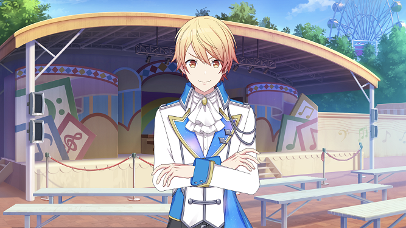
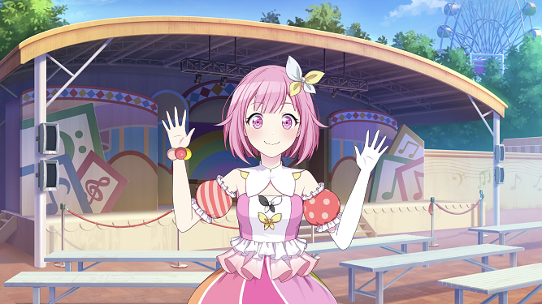
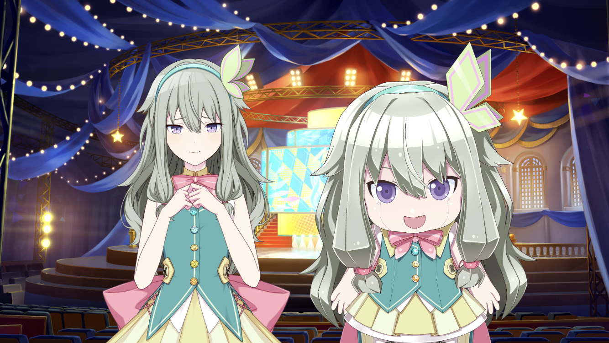
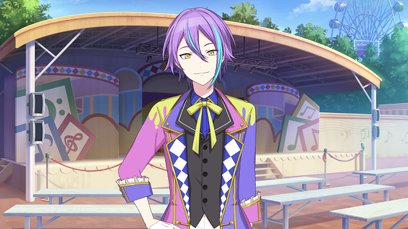
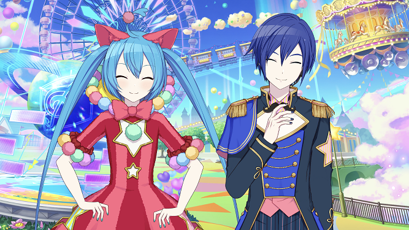
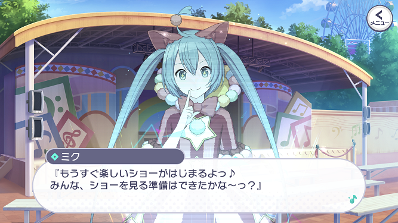
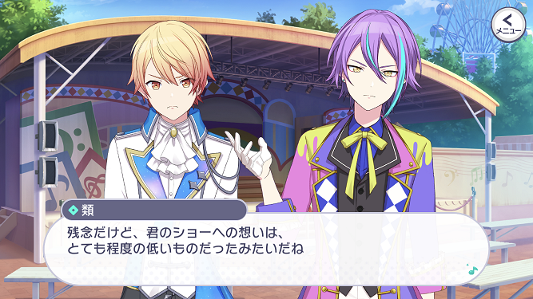
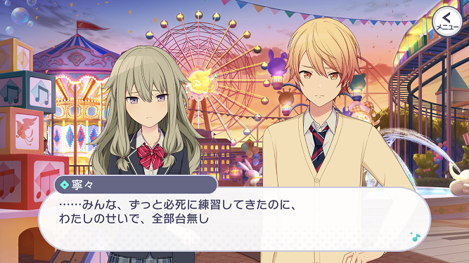
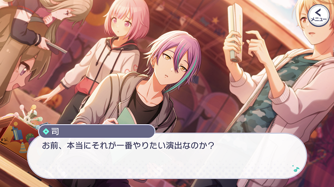
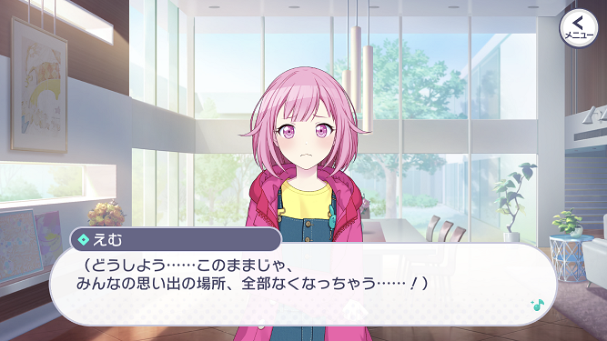

ワンダーランズ×ショウタイム
ワンダーランドのセカイ
ワンダーランズ×ショウタイム(略称: ワンダショ)は、遊園地のステージで活躍するわんだほいなショーユニットです。

天馬 司 (てんま つかさ)

鳳 えむ (おおとり えむ)

草薙 寧々 (くさなぎ ねね)

神代 類 (かみしろ るい)
バーチャル・シンガー

初音ミク、KAITO
メインストーリーのあらすじは公式動画があるのでそちらを確認してみてください。
なお、この動画のBGMは セカイはまだ始まってすらいない です。
なお、この動画のBGMは セカイはまだ始まってすらいない です。
①はちゃめちゃな現実世界とセカイ

ワンダショのストーリーはとにかくすべてがはちゃめちゃでわんだほいです。
突拍子もない提案をするえむ、危険な演出を高い技術力で実現してしまう類、毎度の被害者である司、やれやれポジションの寧々。
セカイではミクらも混じってさらにカオスな展開になります。
読んでいるだけで思わず笑えてしまうのが彼ら彼女らの魅力ですが、突如として誰かの悩みがワンダショから笑顔を奪ってしまいます。
コミカルなストーリーの中に突如として入ってくるシリアスさがプレイヤーを揺さぶります。
突拍子もない提案をするえむ、危険な演出を高い技術力で実現してしまう類、毎度の被害者である司、やれやれポジションの寧々。
セカイではミクらも混じってさらにカオスな展開になります。
読んでいるだけで思わず笑えてしまうのが彼ら彼女らの魅力ですが、突如として誰かの悩みがワンダショから笑顔を奪ってしまいます。
コミカルなストーリーの中に突如として入ってくるシリアスさがプレイヤーを揺さぶります。
②司が忘れてしまった想い

司は「世界一のスターになる」ことが自分の想いだと思っています。
それ自体は正しいのですが、なんでスターを目指し始めたのか？と聞かれると答えが出なくなってしまいます。
そして、司の言動は自分の本当の想いと少しずつズレていき、スターの夢も遠ざかってしまいます。
司は本当の想いに気づき、それに向かって改めて進み出すことができるのでしょうか。
それ自体は正しいのですが、なんでスターを目指し始めたのか？と聞かれると答えが出なくなってしまいます。
そして、司の言動は自分の本当の想いと少しずつズレていき、スターの夢も遠ざかってしまいます。
司は本当の想いに気づき、それに向かって改めて進み出すことができるのでしょうか。
③寧々のトラウマ

寧々は類が作ったロボットを操作してショーに出ており、自分自身は舞台に立ちません。
かつて劇団に所属して主役にもなったことのある寧々がこのようになってしまったのは、過去に自分のミスで劇団に迷惑をかけてしまったというトラウマが原因です。
寧々がこのトラウマを克服し、かつてのようにステージで堂々と歌えるようになるには時間がかかりますが、その軌跡に注目です。
かつて劇団に所属して主役にもなったことのある寧々がこのようになってしまったのは、過去に自分のミスで劇団に迷惑をかけてしまったというトラウマが原因です。
寧々がこのトラウマを克服し、かつてのようにステージで堂々と歌えるようになるには時間がかかりますが、その軌跡に注目です。
メインストーリー後の展開
クリックして開く(※ネタバレ含む)
④類のジレンマ

⑤えむの抱える想い
